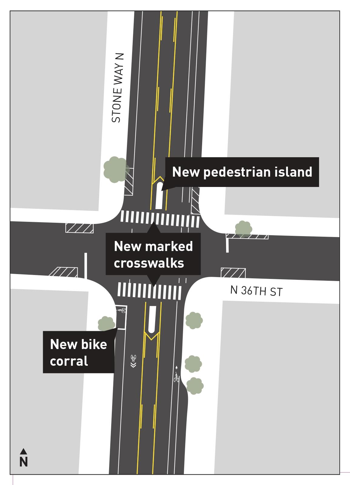
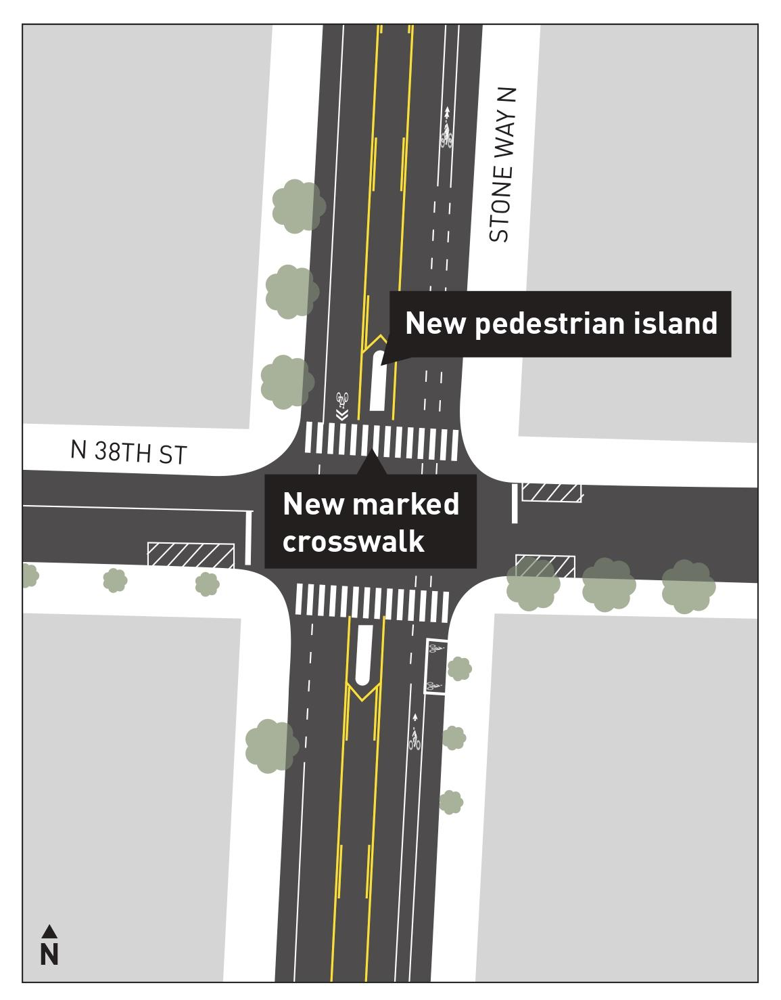
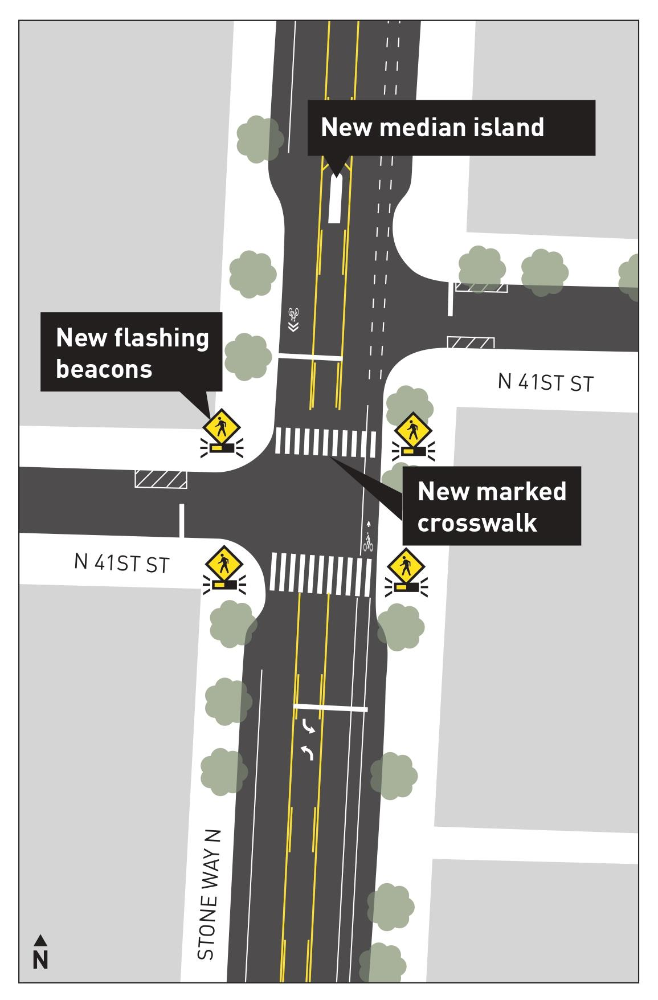
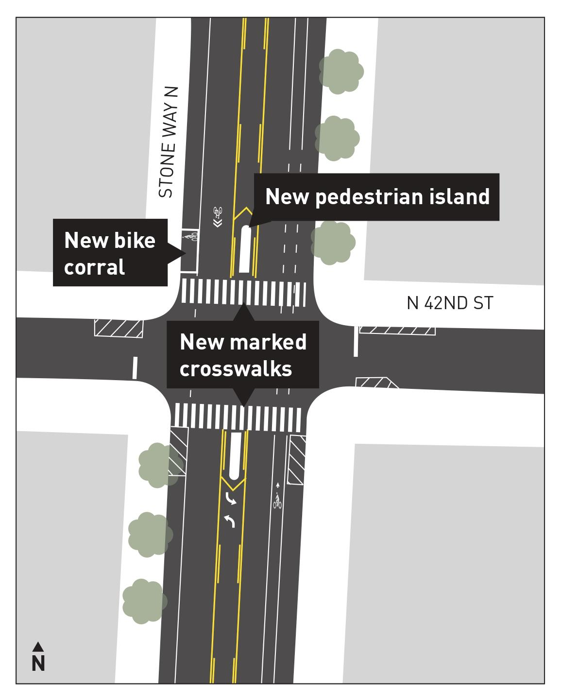
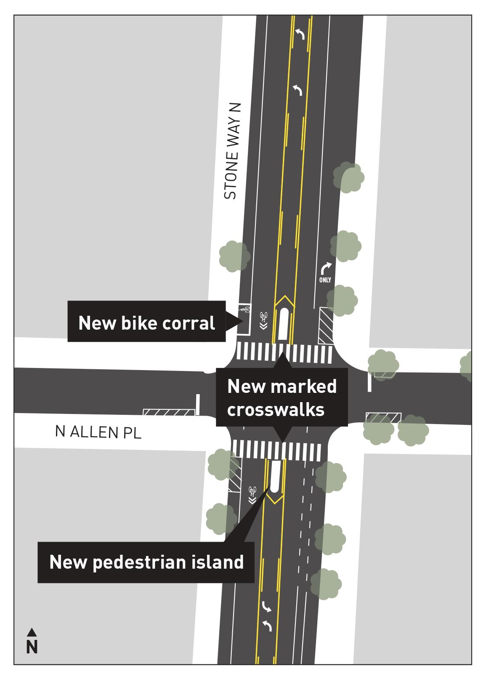

Completed project / Seattle, WA
Stone Way N.
A better way
to cross.
A neighborhood effort for safer crossings, from the first outreach in March 2023 to five improved intersections.
Follow the project storyThe work behind
the crossings.
Advocacy began in 2023 as the Ship Canal Water Quality Project and nearby construction made pedestrian conditions at the south end of Stone Way especially poor. Ballard-Fremont Greenways documented blocked sidewalks, confusing detours, and conflicts between people walking, biking, and driving—and asked the city for specific improvements.
The early requests focused on N 34th St to N 36th St. The completed safety project covers five intersections from N 36th St to N Allen Pl, with marked crosswalks, pedestrian and median islands, clearer sightlines, and flashing beacons at N 41st St.
- Advocacy
- Ballard-Fremont Greenways
- Where
- N 36th St → N Allen Pl
- Delivery
- Seattle Department of Transportation
- Funding
- 2024 Seattle Transportation Levy
How we got here.
The early advocacy, from March 2023 through February 2024, followed by the city’s documented project milestones.
-
DOCUMENT THE PROBLEM
Start with the conditions on the street.
Ballard-Fremont Greenways sent its first outreach about the south end of Stone Way N. The Ship Canal Water Quality Project and nearby construction had created especially poor pedestrian conditions around N 34th St to N 36th St.
The March feedback documented blocked sidewalks, closed routes to preschools, people walking in the bike lane, and incorrect or confusing detour signs. It paired photographs of the problems with concrete requests:
- Keep sidewalks accessible and provide an adjacent pedestrian reroute while maintaining the bike lane.
- Restore preschool access and improve wayfinding around closures.
- Install a temporary signal at Stone Way N and N 36th St.
- Change signal timing at N 34th St to reduce turning conflicts, and relocate obstructive utility poles.
-
RENEW THE REQUEST
A collision brings renewed urgency.
After a cyclist was hit by a vehicle at Stone Way N and N 36th St on , Ballard-Fremont Greenways reached out again.
The December feedback described heavy crossing demand, construction-related cut-through traffic, high vehicle speeds, and the absence of a crosswalk across a road with three or more lanes. The request focused on a four-way stop and a permanent marked crosswalk across Stone Way N on the north side of N 36th St.
Read Stone Way and 36th Feedback · December 2023 PDF -
SDOT RESPONSE
The crosswalk request is denied.
SDOT declined the request for a crosswalk at Stone Way N and N 36th St. Its response addressed a marked crosswalk alone on a multi-lane road and stated that this intersection was not on the list for signal analysis that year.
Read SDOT’s response
SDOT generally finds that on multi-lane roads (three or more lanes), a marked crosswalk alone without an accompanying traffic signal will do little to improve driver compliance or pedestrian safety.
SDOTs Signals Division has performed a citywide, data-driven analysis of collision history and expected growth at both existing signals and unsignalized intersections. This analysis was used to produce a priority list for new signals. This Stone Way N and N 36th St is not currently on our list of intersections to be analyzed this year.
SDOT response · January 26, 2024 -
BUILD LOCAL SUPPORT
Bring businesses and schools into the effort.
Ballard-Fremont Greenways reached out to local businesses and schools and received support from:
- Sea Wolf Bakers
- Fremont Community School
- Seattle Bouldering Project
- Evergreen Garden School
- Evolution Projects
- Figurehead Brewing
- Stone Way Cafe
- Brooks Running
Replies described difficult access for families and staff, near misses, earlier unsuccessful requests, and a willingness to sign letters or write directly to SDOT. Support for a crosswalk did not always mean equal support for a four-way stop.
Read three business replies
Replies to the February outreach, shown without individual business attribution.
We would definitely sign off on the need for a four way stop and a permanent crosswalk here. Due to construction and more and more popular businesses on and around Stone Way, traffic is busier than it's ever been. It would be helpful to our families and staff to have easier traffic flow.
I don't think we would join a committee or anything, but we would be happy to sign letters or have our name be added to requests to the city to make this change. I could also write directly to SDOT supporting/echoing your recommendations. Please let us know how best to move forward with that.
Business reply 1 · February 2024 We would love to see a crosswalk at that location. I agree completely about the danger of that intersection and actually requested a crosswalk years ago without any success.
I feel less strongly about the four-way stop--it seems as though a lot of the traffic at that point is related to the closure at 35th and rerouting of traffic to Woodland Park Ave.
Let me know if you need anything else from us, but I'd be happy to lend our name to a formal request.
Business reply 2 · February 2024 Thank you for reaching out to us. In fact, we are part of a larger community group which has been in contact with the city regarding serious concerns we have about the impact of the construction projects on our community. We have also had near misses of cars hitting children, teachers, and residents. Many cars are sideswiped and damaged with no contact information. We have sent videos to the city and some of our recommendations have already been implemented - but not enough.
This evening, I am actually meeting with a small core of community members so that we can organize a much larger campaign to get the city's attention on the dangerous environment the traffic and parking restrictions have created.
The 36th and Stone Way intersection is extremely dangerous for pedestrians, cyclists, and vehicles and needs immediate attention.
Please see my comments below and I am happy to follow up with you once we expand the group to include local businesses.
Business reply 3 · February 2024 - FUNDING
A funding path for safer streets.
Seattle voters approved the Transportation Levy. SDOT identifies that levy as the funding source for the Stone Way N safety improvements.
Source: SDOT project funding - CONSTRUCTION UPDATE
Work reaches all five intersections.
SDOT reported that construction had started at N 36th St, N 38th St, N 41st St, N 42nd St, and N Allen Pl. At that point, crews still needed to return to fill the pedestrian median islands with asphalt.
Source: SDOT’s October 21 update - CompletedTHE RESULT
A better way to cross Stone Way.
The project brings crossing improvements to five locations along the corridor. Explore the intersection designs below to see how the changes fit together.
Explore the five crossings
Five crossings.
One connected corridor.
Select an intersection to explore the changes in SDOT’s design drawings.
A new way across the south end.
Marked crosswalks and pedestrian islands give this intersection a more defined place to cross. The city’s design also includes a bike corral.
- New marked crosswalks
- Pedestrian islands
- Bike corral

A crossing in two stages.
The design adds two marked crosswalks across Stone Way N, with two pedestrian islands providing a place to pause between directions of traffic.
- Two marked crosswalks
- Two pedestrian islands

A crossing that gets your attention.
Pedestrian-activated flashing beacons accompany two marked crosswalks. A new median island sits on Stone Way N north of the intersection.
- Pedestrian-activated flashing beacons
- Two marked crosswalks
- Median island north of N 41st St

More room for the everyday crossing.
Two marked crosswalks and pedestrian islands are paired with a bike corral at the northwest corner of the intersection.
- Two marked crosswalks
- Pedestrian islands
- Northwest-corner bike corral

The northern connection.
At the north end of the project, the design adds two marked crosswalks with pedestrian islands and a bike corral at the northwest corner.
- Two marked crosswalks
- Pedestrian islands
- Northwest-corner bike corral

Go to the source.
The early advocacy account draws on Ballard-Fremont Greenways’ outreach documents and correspondence supplied by the organizers. Project scope, funding, the October 2026 construction update, and intersection drawings come from SDOT.
- Stone Way FeedbackMarch 2023 · PDF · 17 MB
- Stone Way and 36th FeedbackDecember 2023 · PDF · 958 KB
Drawings: Seattle Department of Transportation. These show the project design, not an as-built survey or before-and-after photographs. The city page was last updated October 21, 2026 and still described remaining island work at that time.